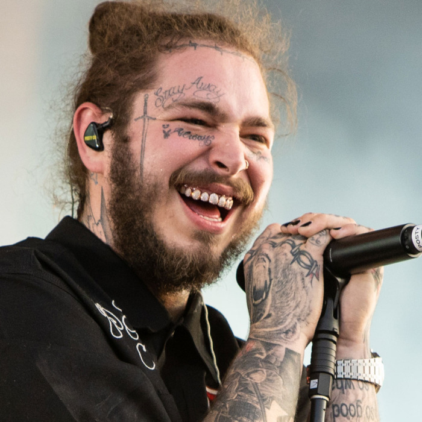

ABOUT THE ARTIST
Dropping basketball references like the old-school but wrapping them in thoroughly modern beats, Post Malone first hit the mainstream in 2015 with "White Iverson," then quickly ascended to hip-hop royalty during 2017-2018 with a succession of multi-platinum hits. Raised in Dallas, Malone was NFL before he was NBA thanks to a father who worked for the Cowboys. He loved music from a young age, and planned on joining a band thanks to the video game Guitar Hero, but when his dad gave him a copy of Terror Squad's hit "Lean Back," Post decided to become an MC. He hung with Dallas crew the IRAS until a move to the West Coast dropped him in Los Angeles. After putting some braids in his hair, he coined the term "White Iverson," and when he posted the track in early 2015, he hit a million views within the month. Malone signed with the Republic label later that year. In 2016, he released the single "Go Flex" along with his official debut mixtape, August 26th, which was actually released in May. Months later, his first studio effort arrived. Stoney featured guests ranging from Justin Bieber to Migos' Quavo to Kehlani. The album peaked at number six on the Billboard 200 and was certified multi-platinum. Following the success of his debut, Post issued the singles "rockstar" with 21 Savage and "Psycho" with Ty Dolla $ign. The former topped the Hot 100 for weeks while the latter alsor reached number one. The tracks landed on his sophomore follow-up, Beerbongs & Bentleys, which hit number one upon its release. Along with producers Scott Storch, PartyNextDoor, Louis Bell, and London on da Track, the effort also featured guest rappers Nicki Minaj, YG, and G-Eazy, among others